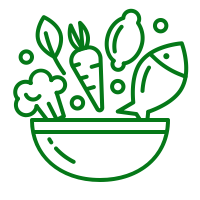
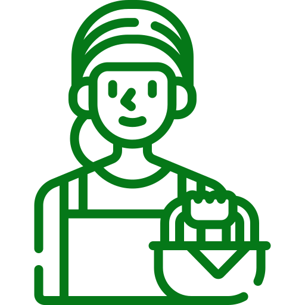

Aceite de Aguacate Organic Health
Natural, extravirgen, sin convervantes químicos, prensado en frío.
Disminuye los niveles de colesterol
El aceite de aguacate es rico en grasas insaturadas que pueden ayudar a reducir el colesterol LDL, conocido como "colesterol malo".
Alto en nutrientes
Además es rico en grasas saludables que pueden ayudar al cuerpo a absorber mejor los nutrientes de otros alimentos. Mejora los niveles de energía.
Hecho artesanalmente
Aceite extravirgen hecho de la fruta madura de aguacates cultivados agroecológicamente y seleccionados cuidadosamente, garantizando un producto de alta calidad y un sabor y aroma únicos.
Elaborado por mujer rural
Elaborado con dedicación por una emprendedora rural, este producto representa el trabajo duro y la pasión de las mujeres en el campo.
Lugar de fabricación
Ubicados en la región cafetera, a 15 minutos de Pereira, en la vereda Santa Teresa, Finca la Esmeralda. Nuestro proceso de cultivo y transformación es agroecógico y amigable con el medio ambiente. No utilizamos fertilizantes ni insecticidas químicos en la producción del aguacate que usamos para extraer el aceite.
Nuestro aceite se produce artesanalmente y es hecho por mujeres rurales.
Visítanos